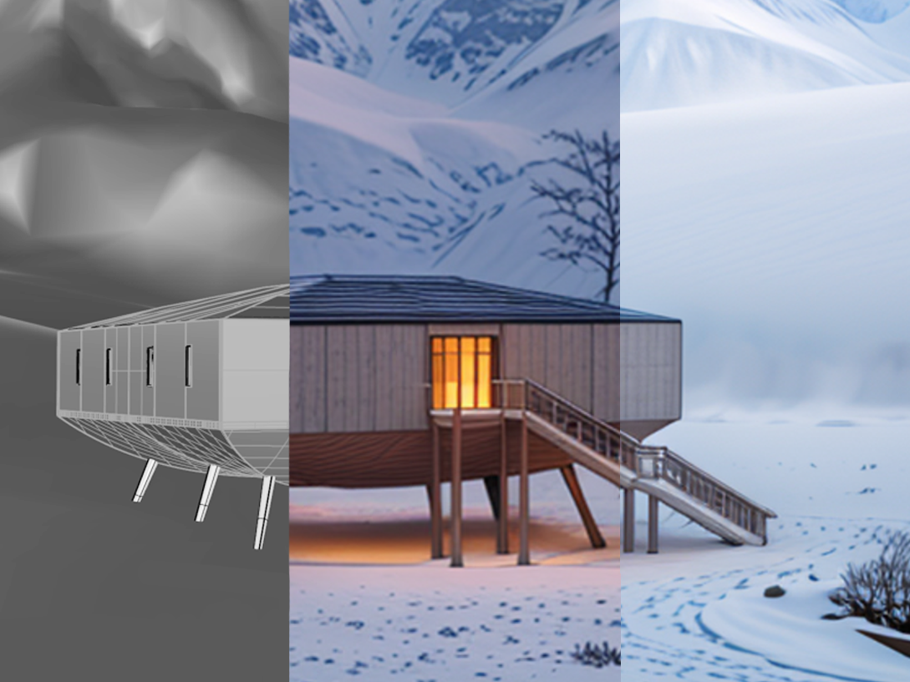
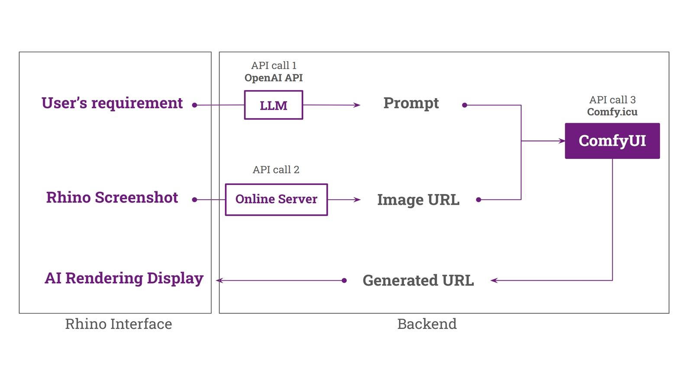
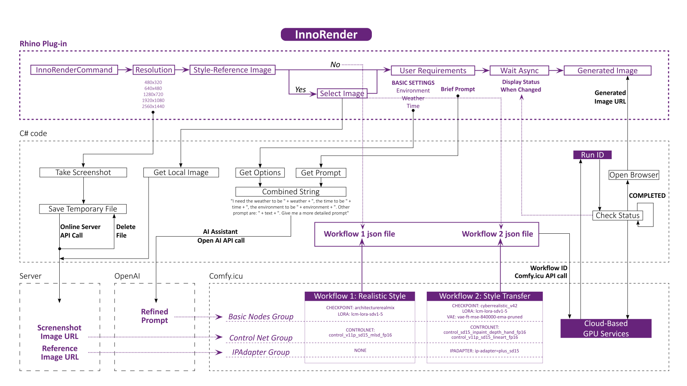
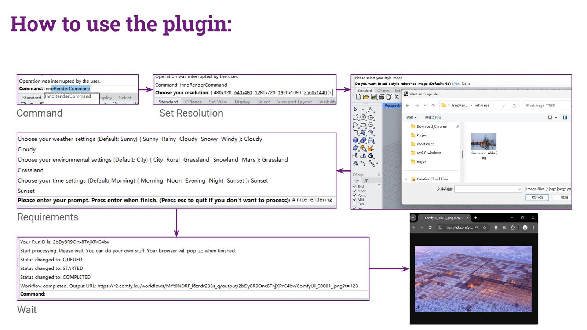
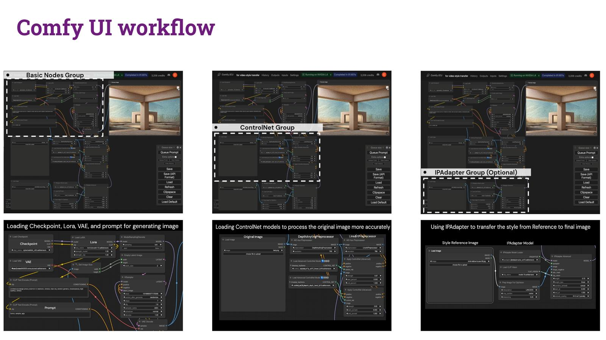
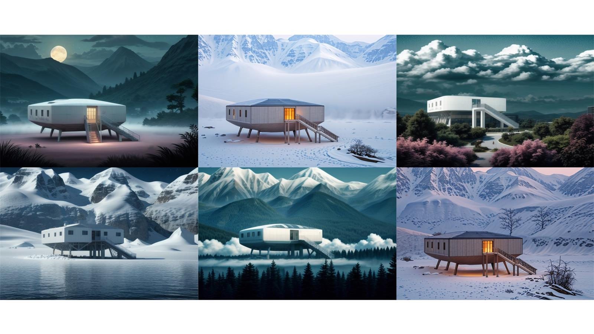

App & Game
Inno-Render Shaoyi Wang
Inno-Render is a Rhino plugin* designed to streamline and accelerate AI-based rendering processes, empowering users with AI-Generated Content (AIGC) capabilities. It take the advantage of Comfy UI, and integrates the AI image generation functions directly into Rhino’s command line. The plugin uses Rhino model screenshots as input and completes the rendering process through API calls to the cloud, generating accurate and high-quality renderings.




